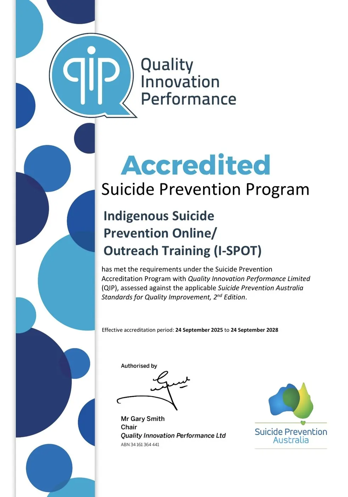

Support, answers and tools for the journey
Whether you need someone to talk to right now or you're planning training for your organisation, start here.
If you or someone you know is in crisis, support is available right now
These services are free, confidential and available today. You don't need to be in a formal crisis to reach out.
- 13YARN13 92 76
24/7 crisis support for Aboriginal and Torres Strait Islander peoples, run by Aboriginal and Torres Strait Islander Crisis Supporters.
- Lifeline13 11 14
24/7 crisis counselling and suicide prevention support, with text and online chat also available.
- Emergency000
If life is in immediate danger, call an ambulance or the police.
- Kids Helpline1800 55 1800
Free, confidential counselling for children and young people aged 5 to 25.
- Beyond Blue1300 22 4636
24/7 support for anxiety, depression and general mental wellbeing.
- Outside Australia
In Canada, call or text 9-8-8 (Suicide Crisis Helpline). In Aotearoa New Zealand, call or text 1737.
Suicide prevention news and updates
A curated selection of news, research and campaigns from across the suicide prevention sector, reviewed and refreshed periodically by our team.
-
National Indigenous Times, January 2026
New First Nations campaign urges early conversations
“Connection is Prevention: Just Have the Yarn” has launched in Victoria alongside BLKTRX, the state's first Aboriginal online mental health service directory.
Read the article (opens in a new tab) -
Gayaa Dhuwi (Proud Spirit) Australia
National Aboriginal and Torres Strait Islander Suicide Prevention Strategy 2025–2035
A national framework, developed with the Commonwealth Government, to help communities and governments reduce suicide and self-harm through culturally safe, community-led solutions.
Read the article (opens in a new tab) -
National Suicide Prevention Office, 2026
Community Toolkit launched for World Suicide Prevention Day
The National Mental Health Commission has released a Community Toolkit to help local groups plan their own suicide prevention activities and conversations.
Read the article (opens in a new tab) -
EMPHN, September 2026
World Suicide Prevention Day: start the conversation
A regional look at how open conversations, compassionate listening and postvention support are strengthening suicide prevention across eastern and north-eastern Melbourne.
Read the article (opens in a new tab) -
Department of Health, Disability and Ageing, April 2026
Assistant Minister addresses National Suicide Prevention Conference
Assistant Minister Emma McBride sets out the Australian Government's ongoing priorities and investment in suicide prevention at the 2026 national conference.
Read the article (opens in a new tab) -
Suicide Prevention Australia
The national peak body for the sector
Ongoing sector news, research, advocacy and events from Australia's peak body for suicide prevention: a good first stop for what's happening across the field.
Read the article (opens in a new tab)
Frequently asked about I-SPOT training
Can't find your answer? We're happy to talk it through.
Ask us a questionWho is I-SPOT training for?
I-SPOT is suitable for community members, frontline and health workers, young people and whole organisations. Our four programs (Community & Frontline Workshop, Train-the-Trainer, Youth Program and Organisational Cultural Safety) cover different roles and levels of depth, so there's a starting point for most audiences.
Is training delivered online, in person, or both?
Every I-SPOT program can be delivered face-to-face, online, or as a blend of both, depending on what suits your community, team or organisation.
Where does I-SPOT operate?
We deliver across Australia, with a strong focus on Central Australia, as well as in Canada and Aotearoa New Zealand, partnering with First Nations communities in each region.
Is I-SPOT accredited?
Yes. I-SPOT is accredited against the Suicide Prevention Australia Standards and holds QIP (Quality Innovation Performance) Accredited Program status: the first culturally safe, 100% Indigenous-owned, designed, led and accredited program of its kind. It was also recognised with a Highly Commended Award in the Priority Populations category at the 2026 Suicide Prevention LiFe Awards.
Can our organisation become a licensed I-SPOT facilitator?
Yes. Our Train-the-Trainer program is built for this. It licenses your own staff to deliver I-SPOT internally, so cultural safety capability stays inside your community or organisation for the long term.
How does I-SPOT support our Reconciliation Action Plan?
Our Organisational Cultural Safety program is designed for organisations working through a RAP, particularly at Stretch and Elevate tiers, embedding cultural safety and trauma-informed practice across a whole workforce rather than as a one-off session.
How do we book a program or ask a question first?
Send us an enquiry through our contact page and our team will get back to you within two business days to talk through the right fit.
Independently accredited, on the record
I-SPOT (Indigenous Suicide Prevention Online/Outreach Training) has met the requirements of the Suicide Prevention Accreditation Program with Quality Innovation Performance Limited (QIP), assessed against the Suicide Prevention Australia Standards for Quality Improvement, 2nd Edition.
- Accredited from
- 24 September 2025
- Valid until
- 24 September 2028
You're welcome to view or download the certificate for your own records, funding applications or reporting.
Open the full certificate (opens in a new tab)
Program and organisation handbooks
Detailed reading for boards, managers and anyone preparing a funding or procurement case.
The I-SPOT Program Handbook
Our full program handbook, covering the LALA framework, program design and delivery, facilitation protocols, cultural safety commitments, and how we evaluate impact.
Open the program handbookOur Organisation Handbook
A look inside Connection Works itself: our ethos, cultural lens, goals, partnerships and approach to quality improvement, for organisations who want to know who they're working with.
Open the organisation handbookMore guides on request
We're building out more downloadable guides. In the meantime, ask and we'll send the right one straight to your inbox.
I-SPOT overview one-pager
A plain-language summary of our programs, formats and delivery regions, useful for circulating internally before a decision.
Request the one-pagerAligning training with your RAP
How I-SPOT's Organisational Cultural Safety program maps to Reflect, Innovate, Stretch and Elevate RAP commitments.
Request the RAP guide
Talk to our team about what your community needs
Ask a question, request a guide, or start planning training for your organisation.
- Response time
- Within two business days
- Delivering in
- Australia, Canada and Aotearoa New Zealand